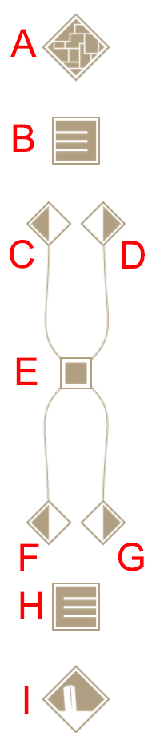

READ ME (and How)
Victory Garden is a hypertext fiction: a story with multiple paths and possibilities. As a work of new media (whatever that was), it also consists, as Lev Manovich always says, of "one or more interfaces to a database." The database in this case is a set of about 1,200 files comprising webpages, graphics, and a few other things. Your primary interface is your browser application, through which you'll have access to those pages, many including the diagram you see on the left. This is the reader interface.
The reader interface has nine parts, labeled here in red. Here's a quick rundown, followed by some context. At the top (A) is a link to a schematic map, a graphical table of contents. You can use it to find entry points into the fiction. The next element (B) will take you to a list of Streams (more about these shortly), many of which are included in the map, along with a whole lot that aren't. Below these elements is a doubly bifurcated figure with five clickable points. Its upper arms hold two links, left and right. The lefthand point (C) moves you backward in whatever Stream you are currently reading. The righthand point (D) moves you forward. You can also use the LEFT and RIGHT arrow keys on your keyboard, if the device you are using has these. The square in the middle of the curved figure (E) will bring you to the page you are currently reading ("Read Me") -- so you can always find your way back here if you need a refresher.
In the lower half of the interface is another pair of limbs, holding click points for Paths (we're getting to those). As with the Stream controls above, the one on the left (F) takes you backward along whatever Path you're currently assigned, while the righthand option (G) advances through the sequence. Arrow keys can also come into play here: UP for forward on a Path, DOWN for reverse. The square below the lower limbs (H) links to a list of all the possible Paths, should you be curious about them. the final element (I) links back to the arrival page on which you started. It's basically a RESTART button.
If you are reading Victory Garden on a device with a touch interface, swipe to the right to advance in a Stream or left to reverse; swipe up to advance on a Path and down to reverse.
Once you move into the work you'll notice that most pages have a headline that looks something like this:
grand · showtime
There are two elements separated by a dot, indicating your currently assigned Path (here "GRAND") and the Stream to which the current page belongs ("SHOWTIME"). Most of the time, one of these elements will be in red: the one on the left if you reached this page as part of a Path, the one on the right if you came via a Stream. If you followed a textlink to this page, both indicators will be in the default color.
The Stream reading may change as you move through the work. The Path indication can also change, though that is less likely. There will always be an active Path, but not all pages belong to a Stream. If you've reached one of those pages, the Stream value will simply read VICTORY GARDEN. Each indicator is clickable. Doing this will take you back to the start of the respective sequence, either Path or Stream.
So what exactly are Paths and Streams? In a hypertext fiction there's no singular storyline. Instead there are vignettes, episodes, and fragments of text that can be put together in a variety of ways. In the original version of Victory Garden there were only Paths (and textlinks of course; we're coming to those). You were intended to find your way to a Path by traversing the Labyrinth, a section of the text in which you find your way to a completed sentence by choosing one of a pair of words. That structure remains in this version. Starting from the title page, you can enter the Labyrinth by clicking on either of the "forward buttons" (D or G in the figure at left), or pressing a corresponding arrow key. Navigate the labyrinth however you like -- and by the way, taking the "forward" option without clicking on a word allows the system to choose for you -- and you will arrive at the start of a Path.
There are 52 Paths. Generally speaking they are not linear or coherent readings. They skip around in strange and devious ways. They're a bit like opening a book at random -- or in one interesting case, turning the pages backward. If you're looking for something approximating conventional fiction, don't bother with Paths. If exploration is your thing, try them out.
Streams, introduced in Victory Garden 2022, deliver something more coherent. With some exceptions, Streams follow characters through discrete moments and situations. There are 42 Streams listed on the Streamlines page. (Though it isn't a Stream in the same sense, the Labyrinth is also listed there.) As noted, there is no single through-line for the work as a whole, so you can read the Streams in any order. The sequence in which they are listed on the Streamlines page is not entirely arbitrary, but it's also not definitive. Each Stream starts with an illustration. You'll know you've reached the end of the Stream when you find yourself back at the Streamlines page.
Can you see every page in Victory Garden by following the Streams and/or Paths? No. Some readable pages are not included in either structure. All those pages are reachable via textlinks -- except for one. (That unreachable page is... let's just say legendary.) Textlinks, of course, are the usual stuff of the World Wide Web. In ancient days when Victory Garden was first written, when most people hadn't yet heard of the Web or hypertext, Michael Joyce and Jay Bolter spoke of "words that yield," meaning they offer a transition from one page to another. There are plenty of yield-ready words in Victory Garden. Most pages in the work have textlinks, though some do not -- follow Path or Stream in those cases. Textlinks are generally not like those in choice-based adventure games, which often function in an overtly plot-driven way. Though there are exceptions, most textlinks in Victory Garden invoke resonances or incidental associations.
Of course, the ultimate interface to the Victory Garden database is the World Wide Web, with all its standards and practices. You can use the familiar features of your browser to retrace the steps of your reading (return to previous pages) or interrogate your history. Should you be minded to delve into the deeper workings, page markup and associated scripts and data are all available if you know how to find them. You might even be able to discover that famously unlinked page. Happy wandering in the Garden.